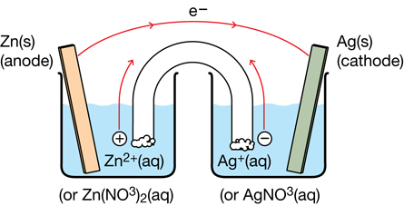
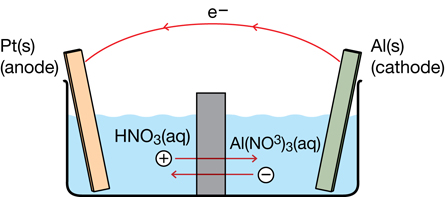
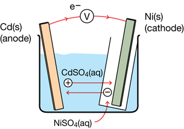
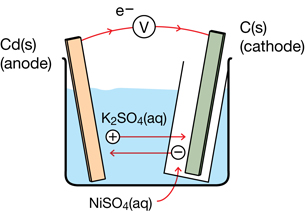

Module 4—Batteries and Balance
 Self-Check Answers
Self-Check Answers
Contact your teacher if your answers vary significantly from the answers provided here.
SC 12.
Practice 1.
voltaic cell: a device consisting of two half-cells connected by an external circuit and a porous boundary or salt bridge
half-cell: a portion of a voltaic cell consisting of an electrode and an electrolyte
porous boundary: a separation between the two half-cells in a voltaic cell; this boundary must allow for the exchange of ions dissolved in solution between the half-cells
salt bridge: one type of porous boundary
electrolyte: the solution within a half-cell or within the salt bridge
external circuit: the wire connecting the two electrodes
inert electrode: an electrical conductor such as carbon or platinum that is not a reactant in the electrochemical reaction occurring within the cell
Practice 2.
cathode: the electrode in which the reduction reaction involving the strongest oxidizing agent in the system occurs
anode: the electrode in which the oxidation reaction involving the strongest reducing agent in the system occurs
Practice 3.
- cathode
- anode
- anode
- cathode
Practice 4.
An inert electrode is used when the strongest oxidizing or reducing agent in a voltaic cell is in the aqeuous or molten state. The inert electrode allows the transfer of electrons in a half-cell. Graphite (carbon) and platinum are two commonly used inert electrodes.
Practice 5.
The solute in the salt bridge solution should be a very soluble ionic compound containing spectator ions (ions that will not participate in a reaction within the cell).
Practice 6.
- strongest oxidizing agent: Ag+(aq)
strongest reducing agent: Zn(s)
cathode half-reaction: (Ag+(aq) + 1e– → Ag(s)) x 2
anode half-reaction: Zn(s) → Zn2+(aq) + 2e–
net cell reaction: 2 Ag+(aq) + Zn(s) → 2 Ag(s) + Zn2+(aq)

- strongest oxidizing agent: NO3–(aq), H+(aq)
strongest reducing agent: Al(s)
cathode half-reaction: (2 NO3–(aq) + 4 H+(aq) + 2e– → N2O4(g) + 2 H2O(l)) × 3
anode half-reaction: (Al(s) → Al3+(aq) + 3e–) × 2
net cell reaction: 6 NO3–(aq) + 12 H+(aq) + 2 Al(s) → 3 N2O4(g) + 6 H2O(l) + 2 Al3+(aq)

Practice 7.
- Cations migrate toward the cathode; anions migrate toward the anode.
- Because electrons are moving from the anode half-cell to the cathode half-cell, ions must move to keep all parts of the cell electrically neutral. This raises the question of why the electrons move in the first place. The answer is that the electrodes have different potentials. The anode has a greater tendency to lose electrons than does the cathode.
- In a cell, all positive ions (cations) migrate toward the cathode. Since Cu2+ is a blue ion, its colour becomes visible in the salt bridge as the ions pass through from anode to cathode.
Practice 8.

Practice 9.

The net reaction for the cells in Practice 8 and Practice 9 is Cd(s) + Ni2+(aq) → Cd2+(aq) + Ni(s).